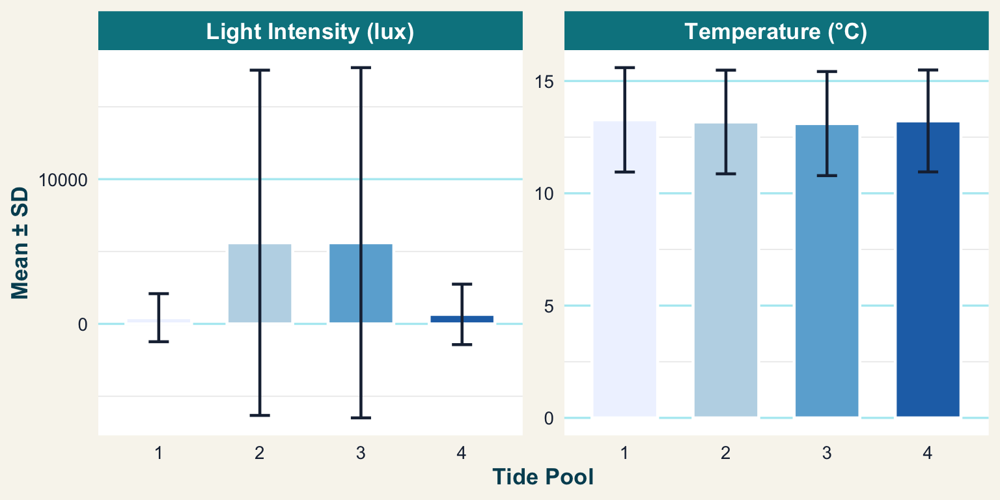

This week’s data set files is a timeseries of temperature and light data collected in tide pools in Oregon by Jenn Fields. The .csv files are named as (TP1.csv - TP4.csv in the Week_13/data/hwk_data/ path). This report will focus on Interative Coding. The goal of this report is to bring in all 4 files and calculate the mean and standard deviation of both temperature (Temp.C) and light (Intensity.lux) for each tide pool using:
1. the ‘for’ Loop approach
2. the purr map approach
Load Data
show code
#read the data oregon <-read_csv(here("Week_13", "data", "hwk_data", "TP1.csv"))# Point to the folder on the computeroregon_path <-here("Week_13", "data", "hwk_data")#check if it existsdir.exists(oregon_path)
[1] TRUE
show code
#List all files in the hwk_data path matching a pattern (here, anything with .csv)files <-dir(path = oregon_path, pattern =".csv", full.names =TRUE, ignore.case =TRUE)files
We need to pre-allocate space so that way we can save the work and as the vector grows, this creates full size container once and the for-loop approach just fills the slots.
show code
#pre-allocate space: one row per file and columns #mean and standard deviation of both temperature (Temp.C) and light (Intensity.lux) for each tide pool.oregon_results <-tibble(filename =rep(NA, length(files)),pool =rep(NA, length(files)),mean_temp =rep(NA, length(files)),mean_intensity =rep(NA, length(files)),std_temp =rep(NA,length(files)),std_intensity =rep(NA, length(files)))for (i inseq_along(files)) {#reading all files one at a time raw_data <-read_csv(files[i], show_col_types =FALSE)#using dataframe set up prior #looking for mean and standard deviation for both Temp and Intensity oregon_results$filename[i] <-basename(files[i]) #Extract a file name from a full path oregon_results$pool[i] <-factor(raw_data$PoolID[1]) #pool for this file oregon_results$mean_temp[i] <-mean(raw_data$Temp.C, na.rm =TRUE) oregon_results$mean_intensity[i] <-mean(raw_data$Intensity.lux, na.rm =TRUE) oregon_results$std_temp[i] <-sd(raw_data$Temp.C,na.rm =TRUE) oregon_results$std_intensity[i] <-sd(raw_data$Intensity.lux, na.rm =TRUE) }#checking oregon_results
Let’s do the same thing, but this time using a different approach: purr.
Instead of looping, we will stack the files into a long dataframe and keeping the filename as columns using map() and list_rbind(). In order to calculate means and standard deviations for temperature and light intensity, we use the group_by() and summarise() functions.
show code
oregon_purr <- files |>set_names(basename) |>#name element by basemap map(read_csv, show_col_types =FALSE) |>#taking all files and reading itlist_rbind (names_to ="filename") |>#stack filesgroup_by(PoolID) |>#calculates mean and sdsummarise(mean_temp =mean(Temp.C, na.rm =TRUE),mean_intensity =mean(Intensity.lux, na.rm =TRUE),std_temp =sd(Temp.C, na.rm =TRUE),std_intensity =sd(Intensity.lux, na.rm =TRUE),.groups ="drop")oregon_purr
#each file should have one poolfiles |>set_names(basename) |>map(read_csv, show_col_types =FALSE) |>list_rbind(names_to ="filename") |>count(filename, PoolID)
# line up the loop and purrr results by pool, then compare the numbersloop_vals <- oregon_results |>select(pool, mean_temp, mean_intensity, std_temp, std_intensity) |>arrange(pool)purrr_vals <- oregon_purr |>mutate(pool =factor(PoolID)) |>select(pool, mean_temp, mean_intensity, std_temp, std_intensity) |>arrange(pool)#compare loop with purr should be TRUE (TRUE = match, FALSE = something is wrong)all.equal(loop_vals, purrr_vals)
[1] "Component \"pool\": Attributes: < target is NULL, current is list >"
[2] "Component \"pool\": target is numeric, current is factor"
Lets make visualizations: Table and Plot
Table 1 is a summary table for final values (from purrr approach). It didn’t really matter which approach to use because they are both identical and the purrr approach was easier to read and code.
Table 1: Mean and Standard Deviation of Temperature (C) and Light Intensity (lux) for each Tide Pool
Temperature (°C)
Light Intensity (lux)
Pool
Mean
SD
Mean
SD
1
13.27
2.32
426.83
1660.55
2
13.17
2.31
5603.16
11928.92
3
13.10
2.32
5605.07
12101.10
4
13.22
2.27
655.10
2088.84
Figure 1 exhibits bar graph panels side by side showing each tide pools average light intensity (left panel) and temperature (right panel) during the recording period. The error bars represents the standard deviation, how much the values varied around that average. Based on the graph, we can infer that although light intensity varied across pools, tide pools 2 and 3 had the greatest variability. Large light standard deviations partly reflect normal day–night cycles, which every pool experiences, but the error bars in temperature are more directly stressful for organisms.
The values are summarized for the whole recording period, it does not really show when the extremes actually occurred.
show code
oregon_plot <- oregon_purr |>pivot_longer(cols =-PoolID,names_to =c(".value", "variable"),names_pattern ="(mean|std)_(.*)") |>mutate(variable =recode(variable,temp ="Temperature (°C)",intensity ="Light Intensity (lux)")) |>ggplot(aes(x =factor(PoolID), y = mean, fill =factor(PoolID))) +geom_col(show.legend =FALSE, width =0.65, color ="white", linewidth =0.8) +geom_errorbar(aes(ymin = mean - std, ymax = mean + std),width =0.2, linewidth =0.8, color ="#1B2A41") +facet_wrap(~ variable, scales ="free_y") +scale_fill_brewer(palette ="Blues") +labs(x ="Tide Pool", y ="Mean ± SD") +theme_minimal(base_size =13) +theme(plot.background =element_rect(fill ="#F8F5EE", color =NA), # off-whitepanel.background =element_rect(fill ="#FFFFFF", color =NA), # white panelspanel.grid.major.x =element_blank(),panel.grid.major.y =element_line(color ="#B2EBF2"),strip.background =element_rect(fill ="#00838F", color =NA), # teal headersstrip.text =element_text(color ="white",face ="bold", size =13),plot.title =element_text(face ="bold", size =18, color ="#004D61"),plot.subtitle =element_text(color ="#00695C"),axis.title =element_text(face ="bold", color ="#004D61"),axis.text =element_text(color ="#1B2A41"))oregon_plot

Figure 1: Mean (± 1 SD) Temperature (°C) and Light Intensity (lux) for each Tide Pool
Conclusion
This was a fun assignment. I learned both for loop and purrr approach. Both produced identical means and standard deviations which was confirmed by the code mentioned above.
For loop approach was easy but I needed to create a pre-allocated space which is an extra step. However, to make life easier the purrr approach kept everything short and was a build up of what we learned throughout the semester.
I think learning these two approaches was super useful especially for bigger datasets. However, the only tricky part about this was getting the file paths right. I spent most of my time trying to find where the data was and why the directory kept going to my script when my data was in the data folder.